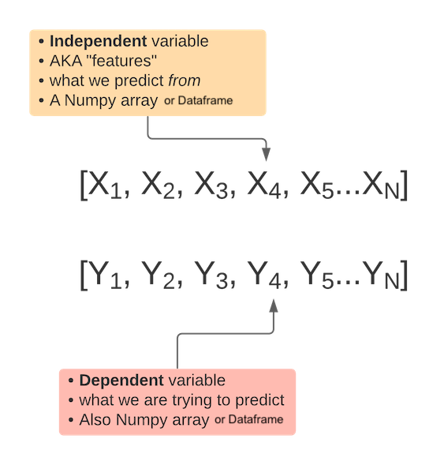
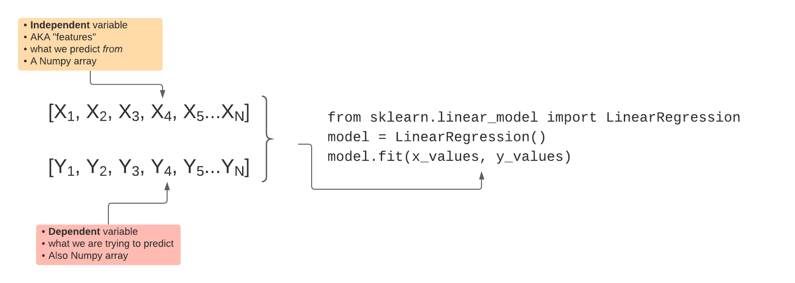
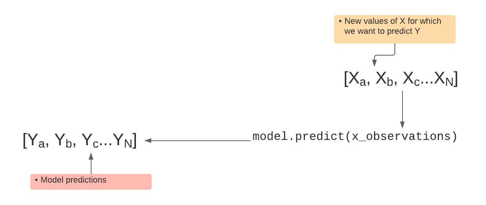
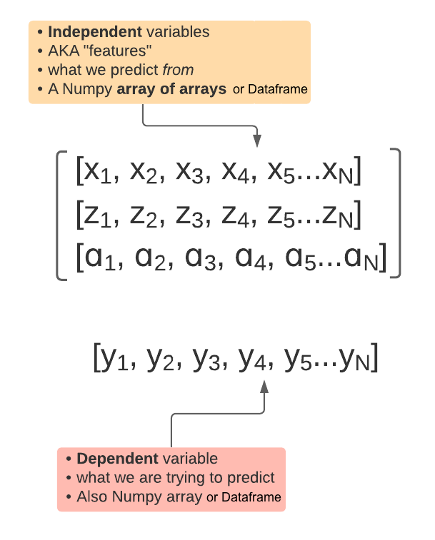
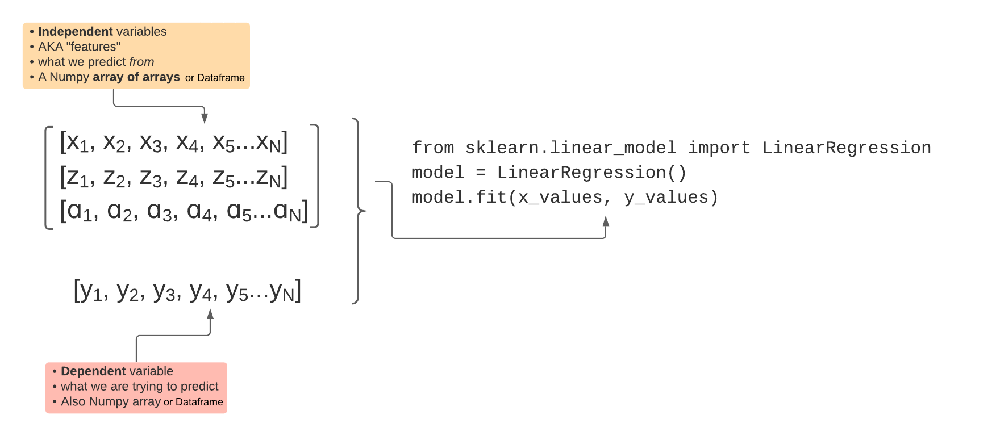

Machine Learning: Classification
Announcements
- Assignment 6: Deadline extended to Tuesday December 8.
- This is our last day of class
- No extensions
- Assignment 7: I'm dropping it.
- Your grade will be based on assignments 1-6
- Please take a few minutes to complete a course eval
- You should have received an email from
StudentCourseEvaluations@umbc.eduwith a link to the surveys for classes in which you are enrolled - Deadline is December 8th
- You should have received an email from
Let's recap regression.
Input Data: univariate regression
Model training
Predicting with the model
Input Data: multivariate regression
Model training
Predicting with the model

Let's talk about polynomial regression...
Naive Bayesian Classifier

Thomas Bayes
What makes the Naive Bayes Classifier Good?
- Simple
- Intuitive
- Works surprisingly well
How does it work?
- Let's say we have three categories: 1, 2, and 3
- And we have a bunch of features,
X =[x1,x2,x3...x4] - Every
xbelongs to one of three categories: 1, 2, or 3 - We want to calculate probability. Given a single x, what is the probability of it's being a y?
- Which value of y has the highest probability? That's the one we choose to classify our x as.
- But how do we do that?
Enter Bayes' theorem
\[\begin{aligned} P(Y|X) = \frac{P(X|Y)P(Y)}{P(X)} \end{aligned} \]
We can calculate P(Y)
\[\begin{aligned}
P(Y\equiv Play) = \frac{\#Play}{\#Play + \#NoPlay}
\end{aligned} \]
We can calculate P(X)
\[\begin{aligned}
P(Y\equiv Sunny) = \frac{\#Sunny}{\#Sunny + \#Overcast + \#Rainy}
\end{aligned} \]
We can calculate P(X|Y)
\[\begin{aligned}
P(X \equiv Sunny|Y\equiv Play) = \frac{\#Play \& \#Sunny}{\#Play}
\end{aligned} \]
The problem is that this gets huge
- For a model with k binary features, there are: \[\begin{aligned} 2^{k+1} - 1 \end{aligned} \] ...parameters to calculate
- 7 parameters are needed for a 2-feature binary dataset
- To get around this we pretend all features are independent
- This is the "naive" part of the algorithm. Parameters to calculate now: \[\begin{aligned} 2k \end{aligned} \]